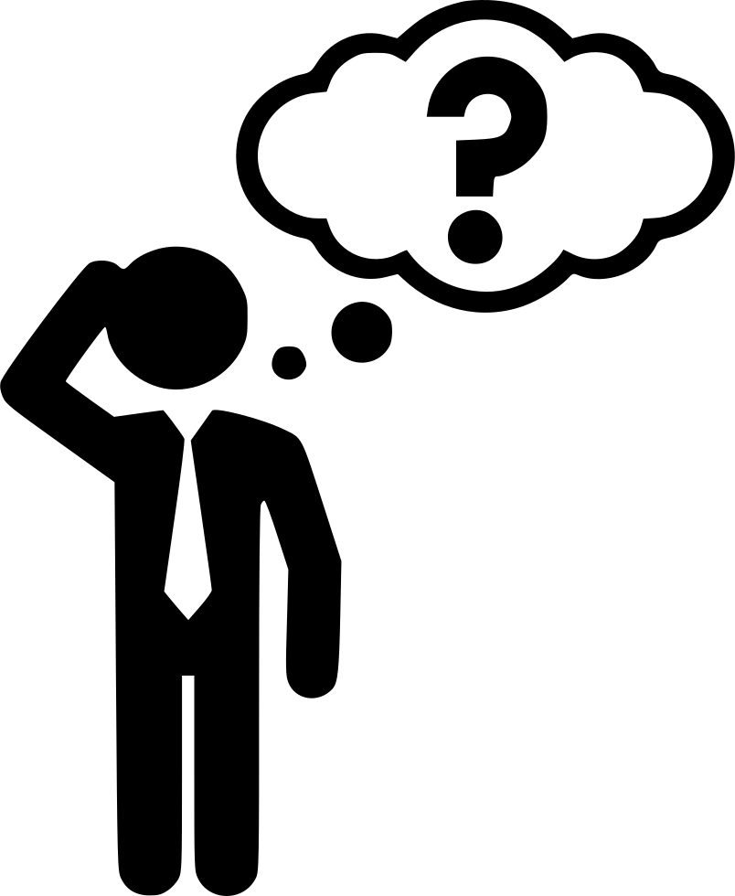

<div class="list-container">
  <div *ngIf="todoList.length === 0; else showList" class="empty-status">
    
    <p class="empty-text">
      ARE YOU GOING TO PROCASTINATE? DON'T BE A FOOL AND JUST START TYPING YOUR
      DUTIES...
    </p>
  </div>
  <ng-template #showList>
    <div *ngFor="let task of todoList" class="list__task-item--row">
      <span
        [ngClass]="task.status ? 'strikethrough' : 'list__text-item--style'"
        (click)="task.status ? null : openDialog(task.id)"
        >{{ task.name }}</span
      >
      <div class="task-panel">
        <div
          (click)="task.status ? uncheckTask(task.id) : completeTask(task.id)"
        >
          
          <ng-template #showUncheckIcon>
            
          </ng-template>
        </div>
        <div (click)="deleteTask(task.id)">
          
        </div>
      </div>
    </div>

    <button
      type="button"
      class="list___clear-items--submit-btn"
      (click)="clearList()"
    >
      CLEAR ITEMS
    </button>
  </ng-template>
</div>
